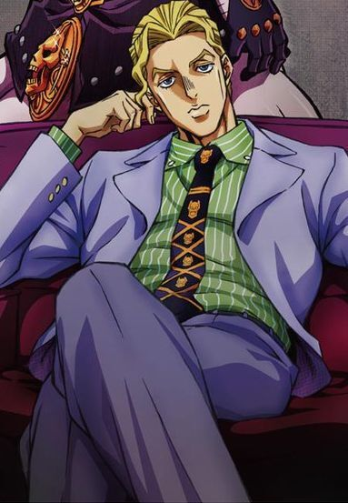
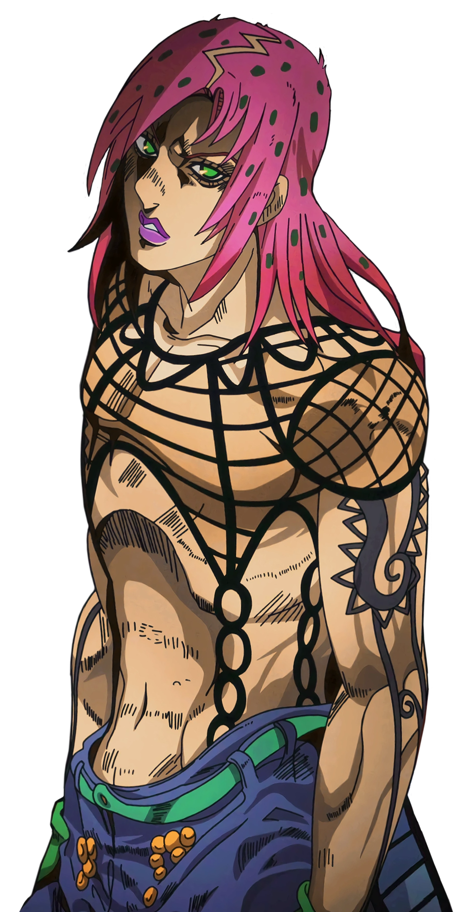
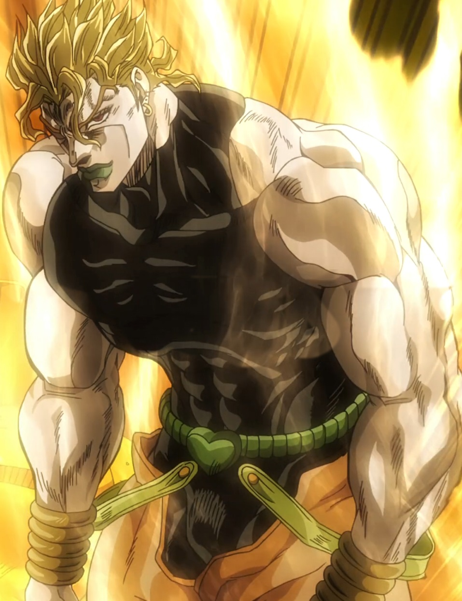
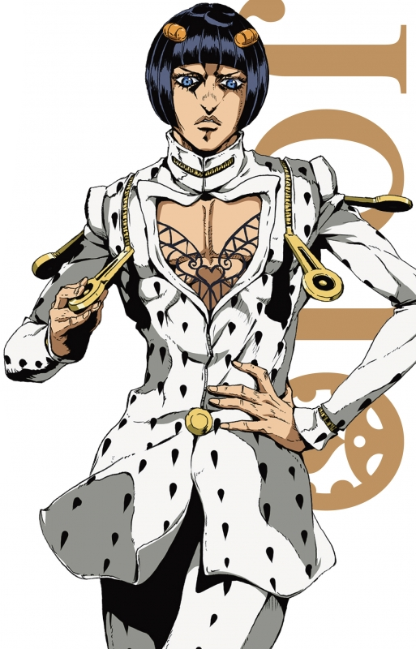
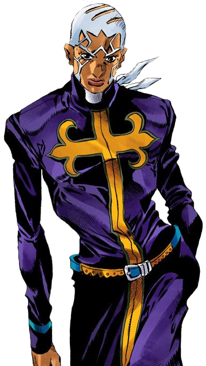
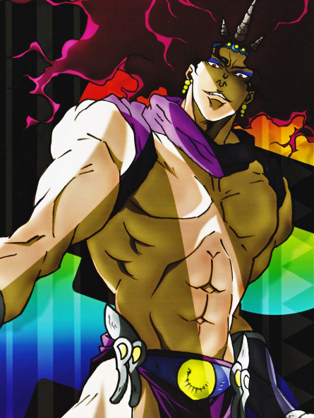
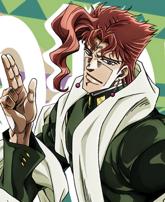
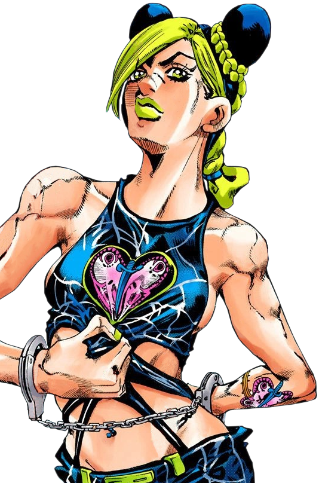
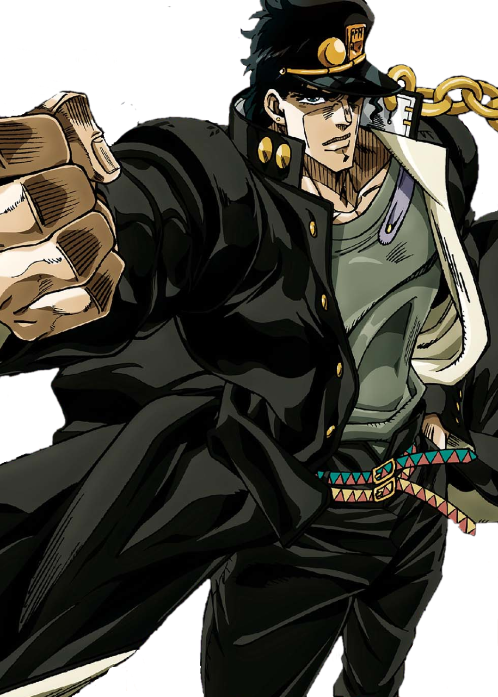

Персонажи Jojo Bizzare Adventure:
Кира Йошикаге
Diavolo
Dio
Бруно Бучелатти
Энрико Пуччи
Карс
Какёин Нориаки
Джолин Куджо
Джотаро Куджо

Kira
Кира Йошикаге — главный антагонист «Несокрушимого алмаза». Кира — серийный убийца, годами скрывающийся в городе Морио. Оставаясь незамеченным большую часть своей жизни, Кира привлекает внимание Джостаров, когда неупокоенный призрак его первой жертвы, Рейми Сугимото, просит их о помощи в поиске убийцы. Стенд Киры, Killer Queen, обладает способностью превращать любой предмет во взрывчатку и детонировать его.

Diavolo
Дьяволо является главным антагонистом «Золотого ветра». Босс мафии "Passione".
Он в основном известен как "Босс" банды Passione, которая развращает город Неаполь, распространяя наркотики на улицах, делая Джорно Джованна и Бруно Буччеллати его самыми большими врагами. Из-за его навязчивой секретности почти никто не знает о его внешности, имени и прошлом. Дьяволо также является отцом Триш Уна и приказывает банде Буччеллати привести ее к себе, в то же время охраняя ее от предателя Squadra Esecuzioni.

Dio
Дио Брандо или ДИО — главный антагонист "Призрачной крови" и "Крестоносцев звёздной пыли".
Изначально, Дио — человек из низшего сословия, но с большими амбициями и жаждой власти. Став вампиром, а позже пользователем стенда, Дио собрал возле себя много приспешников. Несет ответственность за многие важные события, такие как смерть Джонатана и приобретение стендов семьи Джостаров. Таким образом, он является ключевым персонажем серии, чьё наследие сохраняется в течение нескольких частей.

Bruno Bucharati
Бруно Буччеллати — дейтерагонист Золотого ветра.
Буччеллати - гангстер и лидер его собственной банды в мощной неаполитанской мафии, Passione. Отправленный для отслеживания того, кто напал на Слезливого Луку и появившись, как противник Джорно Джованны, Буччеллати стал первым, кто оказал значимую поддержку Джорно в его восхождении в ряды Passione. Буччеллати также является пользователем стенда Sticky Fingers, способного создавать молнии.

Enriko Putchi
Энрико Пуччи — главный антагонист Каменного океана, и пятый антагонист в серии Невероятные приключения ДжоДжо.
Будучи верным последователем и другом Дио Брандо, Пуччи стремится реализовать план, давно сформулированный Дио - "достичь небес". Работая КапелланомW в Green Dolphin Street, он тайно подставляет Джолин Куджо и использует ее в качестве приманки, чтобы заманить Джотаро Куджо и его воспоминания о Дневнике Дио.
Пуччи является пользователем стенда Whitesnake, способного манипулировать душой и разумом.

Kars
Карс — главный антагонист Боевого стремления.
Карс — лидер Людей из колонн и создатель Каменной маски. Его главная цель — развиться до уровня высшего существа, чтобы победить разрушительное влияние солнечных лучей. Для этого ему требуется Красный камень Эйша, который может усилить эффект Каменной маски. Чтобы заполучить Камень Эйша, Карс готов на любые жертвы, в том числе на многочисленные убийства владеющих Хамоном.
Как создатель Каменной маски и вампиров в целом, Карс является одним из самых значимых персонажей во вселенной. Его изобретения оказали большое влияние на других ключевых персонажей, таких как Дио Брандо, семья Джостаров и семья Цеппели.

Kakyoin Noriaki
Нориаки Какёин — один из дейтерагонистов в Крестоносцах звёздной пыли, союзник Джотаро Куджо.
Какёин - японский студент, которому Дио промыл мозги во время более ранней поездки в Египет, и отправил убивать Джотаро Куджо. После освобождения от влияния Дио он решает присоединиться к Джотаро в его стремлении к Египту, чтобы спасти мать Джотаро и найти искупление. Какёин - пользователь стенда и обладает длинным Hierophant Green.

Jolyne Kujo
Джолин Куджо - протагонист шестой части «Невероятные приключения ДжоДжо» «Каменный океан». Джолин — единственная женщина "ДжоДжо" на сегодняшний день и дочь Джотаро Куджо. Легкомысленная, резкая и энергичная со старшими, Джолин в её юношеские годы легко считалась преступником и безнадёжным делом. Холодная с Джотаро из-за отсутствия в её жизни, она несколько раз пыталась привлечь внимание своего отца, совершая многочисленные незначительные преступления, и несколько раз отправлялась в тюрьму за них. Из-за отсутствия ее отца, Джолин, как говорили, зависела от привязанности и одобрения окружающих, и она была готова взять на себя вину в аварии Ромео, в результате чего её приговорили к 15 годам лишения свободы.

Kujo Jotaro
Джотаро Куджо — протагонист «Крестоносцев звёздной пыли». Один из главных героев в «Несокрушимом алмазе», появлялся в «Золотом ветре», и играет ключевую роль в «Каменном океане». Джотаро — третий по счету и самый часто появляющийся ДжоДжо в серии "Невероятные приключения ДжоДжо".
Джотаро — наполовину японец. Он хулиган, который жил обычной жизнью, пока не вернулся старый враг семьи Джостар, Дио. Видя, что его мать Холи заболевает из-за Дио, и прислушиваясь к призыву своего деда Джозефа Джостара, Джотаро отправляется в Египет, чтобы спасти свою мать и остановить вампира раз и навсегда.
Джотаро — первый ДжоДжо, обладающий стендом,невероятно мощным Star Platinum, а также самый известный персонаж серии.
Нажмите чтобы веруться в начало страницы